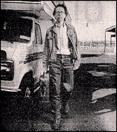

By James D. Watts Jr.
World Entertainment Writer

The Independent Film Channel is one of those cable networks that most Tulsans only hear about -
unless they happen to catch a promo for the channel during one of those rare moments when the
local cable company deigns to broadcast IFC's sister network, Bravo.
But a bit of the Independent Film Channel will come to Tulsa Thursday, when Living Arts of
Tulsa presents a special showing of "Split Screen," the channel's irreverent news magazine
of the "indie film" world.
Two episodes of the show, which officially begins its second season April 6, will be shown
beginning at 8 p.m. Thursday at the Living Arts Space, 19 E. Brady St.
In addition, representatives from the show will be on hand to talk about "Split Screen"
and independent film making. The "Split Screen" film-mobile - a renovated recreational vehicle -
is currently in the midst of an international tour from San Francisco to London, reporting on
various hot-beds of do-it-yourself film making.
Created and hosted by John Pierson, author of "Spike, Mike, Slackers and Dykes " "Split Screen"
can be relatively serious as in its interview segments with actors like John Turturro and Steve
Buscemi, or with directors like John Waters and Hershell Gordon Lewis, a dapper pair who
specialize in shocking audiences with films like "Blood Feast" and -. "Pink Flamingos."
It also can be blatantly satirical - consider the film parody that combines the hipster
comedy "Swingers" with the Southern Gothic "Sling Blade" to create "Swing Blade."
It can verge on the surreal, as in the "Fishing With John" series, in which actor-musician
John Lurie takes people like actor Willem Dafoe on fishing expeditions to far-off locale.
And it can be all these things at once, like in its first-season cliffhanger, about three
documentary film makers who disappeared in 1994, and whose lost film is to be shown as part
of "Split Screen's" second season premiere.
"'Split Screen' is my perspective on what's going on in the independent film making community
that deserves attention," Pierson said "Generally, only 5 percent of indie work gets seen.
There is so much happening by talented people who have something really incredible to say.
We try to showcase these filmmakers in an entertaining way and simultaneously employ a
wide array of talented independent film makers to make the 'Split Screen' vision happen."
Admission to the showing is $5 at the door. Call 585-1234 for more information.